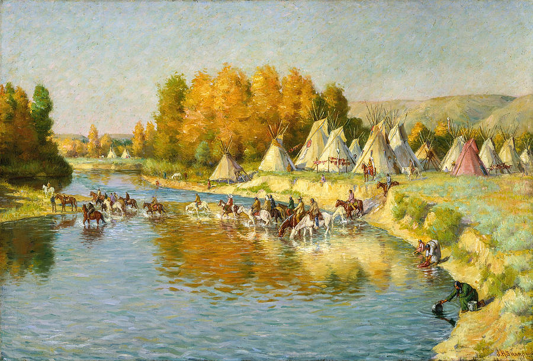
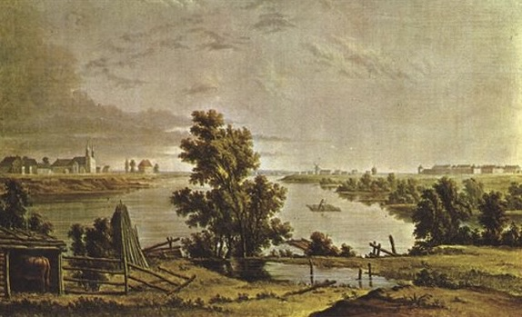

History of the
Red River
A journey through six millennia of human connection to these waters.
6,000+ YEARS AGO
First Nations People
Started 6000 years ago, Indigenous nations have depended on this river. The Red River was one of their main food sources. It provides various kinds of fish, waterfowl and edible plants. The river shaped daily life. It determined when to harvest and move.
At the confluence of the Red and Assiniboine rivers, The Forks has been a gathering place for thousands of years. Trade, ceremony and seasonal gatherings happened here long before European arrived. The rivers also supports transportation, canoes carried good across complex waterways. This confluence has long been important.


1700s — 1800s
Fur Trade
European fur traders saw the Red River as an important route in inland regions. The Hudson's Bay Company and North West Company set up trading posts near the river. On the Red River, voyageurs rowed large canoes full of beaver pelts, reshaped the region's cultural identity.
1812 ONWARD
Settlers & Agriculture
The Selkirk Settlers arrived in 1812. They relied heavily on the river for water and transportation. Agriculture quickly became the cornerstone of the region. Many artists recorded this period in their paintings: farms, river crossings, and the work of settlers.

TODAY
Winnipeg & Manitoba Identity
Winnipeg is built on the rivers. In winter, the frozen surface became a gathering place to enjoy skating and ice fishing. In spring, the flood watch begins. The rivers are still shaping people's daily life.
The Forks has became a public gathering place. Assiniboine Park, and the pathways along the rivers remain an important part of how Winnipeggers experience their city. Winnipeg exists because of these rivers.
For many people, the river carries the memory, walking along the water with family, the cold winter air and the geese return in spring. The Red River is deeply ingrained in how Manitobans understand home. It is not just infrastructure. It is part of identity. It is why this city feels like home for Winnipeggers.